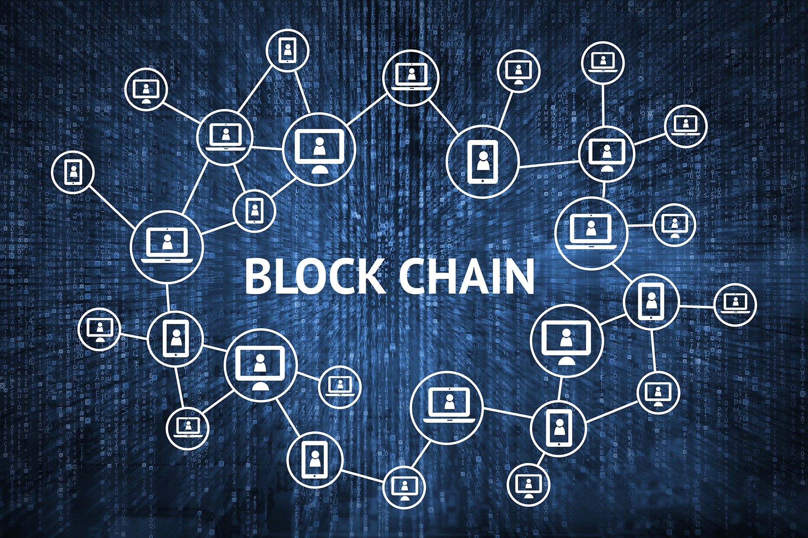

What is the blockchain?
Advanced database mechanisms that enable transparent sharing of information within a business network with data forgery prevention technology based on distributed computing technology.
How it is used in various industries?
Energy
Energy companies use blockchain technology to create P2P energy trading platforms and simplify access to renewable energy.
For example, it can be used like this.
Blockchain-based energy companies have created a trading platform for selling electricity between individuals. If you own a solar panel, you'll be able to use this platform
Use to sell excess solar energy to neighbors. Most processes are automated. The smart meter generates transactions and the blockchain records them.Blockchain-based crowdfunding initiatives enable users to sponsor solar panels to communities that lack access to energy
You can own it. Sponsors may also receive rent from their communities once solar panels are built.
finance
Traditional financial systems, such as banks and stock exchanges, use blockchain services to manage online payments, accounts, and market transactions.
For example, Singapore Exchange Limited, an investment holding company that provides financial transaction services across Asia, uses blockchain technology to create more efficient interbank payment accounts. Blockchain has been introduced to address a number of issues, including batch processing and manual reconciliation of thousands of financial transactions.
Media and entertainment
Media and entertainment companies use blockchain systems to manage copyright data. To compensate the artist fairly,
Copyright verification is important. Multiple transactions are required to record the sale or transfer of copyright content. Sony Music Entertainment Japan uses the
blockchain service to manage digital copyrights more efficiently. To increase productivity and reduce copyright processing costs,
You have successfully used a blockchain strategy.
Programming language used in development
C++
- Bitcoin
- Ethereum
- Ripple
- Dodgcoin
Solidity
- Ethereum
- Ethereum classic
- Tron
Java
- NEM
- IBM blockchain
- Ethereum
- BitcoinJ
In addition, Python, C#, and SQL are used.